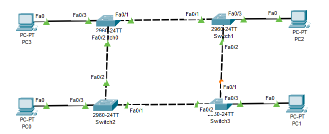

A
B
C
D
Předtím než si vysvětlíme STP a jeho funkci, je třeba si vysvětlit pojem "Broadcast storm".
Broadcast storm je stav, kdy je za krátkou dobu v síti přítomno neuvěřitelně moc broadcast paketů.
Nejlepé si vznik této situace vysvětlíme na ilustraci.

Při tvorbě sítě bychom měli respektovat určitá nepsaná pravidla, jedno z nich je, aby síť byla redundatní.
Lze jasně vidět, že síť v obrázku toto nepsané pravidlo splňuje, jinými slovy, pokud selže Fa0/2 (SW1), rámec od PC1 k PC0 se dostane i tak.
V této síti a každé jiné, která respektuje toto pravidlo, nastává ale velký problém, který souvisí se zpracováním broadcastu na switchi
Co se stane pokud PC1 pošle do sítě broadcast?
1) SW1 jej pošle na všechny ostatní média kromě tohož, ze kterého broadcast vyšel.
2) Tento postup opakují i ostatní switche, výsledkem bude to, že PC0 a PC1 obdrží opakovaně, switche budou mít bordel v MAC tabulce a broadcasty budou v síti proudit dokud je něco nezastaví.
Tuto problematiku právě řeší Spanning Tree Protocol.
STP je jedním z protokolů, který aktivně ovlivňují chod sítě.
Na obrázku si můžete všimnout, že všechny porty až na jeden svítí zeleně.
Proč ale ten port Fa0/1 je oranžový?
Protože na switchích běží jeden z STP protokolů.
STP, Spanning Tree Protocol, je protokol, který zlepšuje chod sítě, tím, že blokuje jednotlivé porty.
Proč je ale potřeba blokovat jednotlivé porty?
Kdyby na této síti nebylo implementováno STP, vznikla by Broadcast Storm.
Broadcast storm je stav, kdy je za krátkou dobu v síti neuvěřitelně moc broadcast paketů (TTL tomu nezabrání, protože to operuje na L3) --> to poté může zapříčinit přetížení switchů a dalších zařízení v síti.
Broadcast storm mají tendenci vznikat ve "spolehlivých sítí", kde je každý network device propojený s každým.
Vezmeme si příklad z obrázku (při předpokladu, že v síti není STP/RSTP, čili všechny porty jsou zelené).
PC0 chce poslat broadcast, pošle jej tedy SW2.
SW2 jej tedy pošle na všechny porty kromě toho, ze kterého broadcast přišel (Fa0/3).
Takto se zachová každý switch. Problémem je, že SW1 teď dostane 2 stejný broadcasty od SW3 a SW0, čili je zase přepošle. Broadcast z SW3 na SW0 a ze SW0 na SW3, oba broadcasty také pošle na PC2. SW2 se tak vratí hned 2 broadcasty. To má za následek kromě možného přetížení také vyvolání nestability MAC tabulky.
Nestabilita MAC tabulky je stav, při kterém se neustále aktualizují záznamy, protože rámce se stejnou počáteční MAC adresou dorazí pod jiným interfacem.
Dalším problémem, který nastane je to, že hosti dostanou daný rámec vícekrát, s čímž mohou mít poté problém některé aplikace, nebo můžou hosta uplně zahltit.
Abych to celé shrnul, STP je protokol, který je defaultně nastavený na L2 switchích a jehož jedním z hlavních cílů je zamezit tvoření Broadcast storm, tím, že dočasně zablokuje určité porty (Pakliže jiné médium vypadne, provoz na portu bude obnoven).
Jak celý ten proces vybírání, který port bude zablokovaný probíhá?
Nejvíce zjednošeně probíhá tak, že switche si mezisebou zvolí Root switch, switch který bude celou STP operaci řídit, dále ostatní switche spočítají Root cost, číslo, které nám udává jak dobře se rámce po tom médiu dostanou k root switchi.
| Příkazy | Popis | Mód |
|---|---|---|
| show spanning-tree | zobrazí informace o STP | EXEC |
A
B
C
D